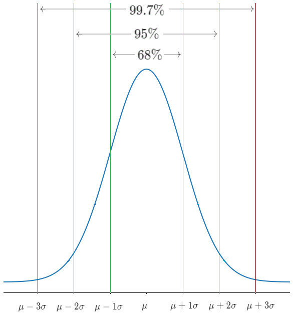

Gaussian Distribution
Gaussian Distribution (a.k.a. Normal distribution, Bell curve) is perhaps the most important probability distribution in statistics. We can see it in numerous natural phenomena like: heights, weight, age, measurement error, IQ score, etc.We had already witnessed it's importance in Central Limit Theorem.
Gaussian Distribution
| Notation | \[\mathcal{N}(\mu,\sigma^2)\] |
Here \(\mu\) and \(\sigma^2\) are parametersWhere \(-\infty < \mu < +\infty\) And \(\sigma^2 \gt \infty\) |
\[f(x)=\frac{1}{\sigma \sqrt{2\pi }} \exp \left(-\frac{(x-\mu )^2}{2 \sigma ^2}\right)\] |
\(-\infty \lt x \lt \infty\) |
|
| CDF | \[F(x)=\frac{1}{\sigma \sqrt{2\pi }} \int_{-\infty}^{x}\exp \left(-\frac{(t-\mu )^2}{2 \sigma ^2}\right)dt\] |
There is no closed form solution, for CDF of a Normal distribution |
| Notation | \[\mathcal{N}(\mu,\sigma^2)\]
Here \(\mu\) and \(\sigma^2\) are parametersWhere \(-\infty < \mu < +\infty\) And \(\sigma^2 \gt \infty\) |
\[f(x)=\frac{1}{\sigma \sqrt{2\pi }} \exp \left(-\frac{(x-\mu )^2}{2 \sigma ^2}\right)\]
\(-\infty \lt x \lt \infty\) |
|
| CDF | \[F(x)=\frac{1}{\sigma \sqrt{2\pi }} \int_{-\infty}^{x}\exp \left(-\frac{(t-\mu )^2}{2 \sigma ^2}\right)dt\]
There is no closed form solution, for CDF of a Normal distribution |
Python code to plot this distribution
import numpy as np
import matplotlib.pyplot as plt
def gaussian_plot(mu: float,
sigma: float,
partitions: int = 1000):
rvs = np.linspace(mu - 3 * sigma, mu + 3 * sigma, partitions)
pdf = (1/(sigma*np.sqrt(2*np.pi))) * np.exp(-((rvs-mu)**2)/(2*sigma**2))
plt.plot(rvs, pdf, label = f"N(μ = {mu}, σ = {sigma})")
plt.legend()
plt.show()
gaussian_plot(0,1)
gaussian_plot(10,4)
Properties of Gaussian
The Empirical Rule
The Empirical Rule\((\text{a.k.a. }68-95-99.7\text{ rule})\)
says: 
- \(68\%\)of population lies within\(1\)standard deviation\((\sigma)\)from the mean\((\mu)\).
- \(95\%\)of population lies within\(2\)standard deviation\((\sigma)\)from the mean\((\mu)\).
- \(99.7\%\)of population lies within\(3\)standard deviation\((\sigma)\)from the mean\((\mu)\).
Linear functions of Normal random variable
Gaussians are invariant under affine(linear) transformation, it means when we do a linear transformation of a Gaussian random variable, it remains a Gaussian random variable.Like if
\(X\sim\mathcal{N}(\mu,\sigma^2)\)
and \(Y=aX+b\)
then \(Y\sim\mathcal{N}(a\mu+b,a^2\sigma^2)\)
Explanation
\(\mathbb{E}[Y] =\mathbb{E}[aX+b]\)
\(\mathbb{E}[Y] =\mathbb{E}[aX]+b \quad; \text{by linearity of expectation}\)
\(\mathbb{E}[Y] =a\mathbb{E}[X] +b\)
\(\mathbb{E}[Y] = a\mu+b\)
\(Var(Y) = Var(aX+b)\)
\(Var(Y) = Var(aX)\)
\(Var(Y) =a^2Var(X)\)
\(Var(Y) =a^2\sigma^2\)
Standardization (a.k.a. Normalization/Z-score)
As we know that CDF of Gaussian distribution has no close form, so we can't solve it by hand. So we need a computer to do it for us. But the problem is, there are so many Gaussian r.v. with different\(\mu\)
and \(\sigma^2\)
.The solution for this is Standardization. By it we can convert any Gaussian r.v. to a Standard Gaussian r.v
\(\mathcal{N}(0,1)\)
.If
\(X\sim\mathcal{N}(\mu,\sigma^2)\)
then:\[X-\mu\sim\mathcal{N}(0,\sigma^2) \]
\[\frac{X-\mu}{\sigma}\sim\mathcal{N}(0,1) \]
\[\Rightarrow Z=\frac{X-\mu}{\sigma}\sim\mathcal{N}(0,1)\]
\[\mathbb{P}\left(u\lt X\lt v\right)=\mathbb{P}\left(\frac{u-\mu}{\sigma} \lt Z \lt \frac{v-\mu}{\sigma}\right)\]
Symmetry
Any Gaussian r.v. with mean\((\mu)=0\)
is symmetricIf
\(X\sim \mathcal{N}(0,\sigma^2)\)
then \(-X\)
has the same distribution as \(X\)
\(\Rightarrow -X \sim \mathcal{N}(0,\sigma^2)\)
Gaussian Probability Table
So as we know that CDF of a gaussian has no close form, therefore we use tables to get those CDF's.The table given below gives us CDF of a Standard Gaussian r.v.
\(\mathcal{N}(0,1)\)
CDF of
\(\mathcal{N}(0,1)=\Phi(x)\)
\[\Phi(x)=\mathbb{P}(\mathcal{N}(0,1) \leq x)=\frac{1}{\sqrt{2\pi }} \int_{-\infty}^{x}\exp \left(-\frac{t^2}{2}\right)dt\]
\(\text{Table for }\Phi(x)\)

| z | +0.00 | +0.01 | +0.02 | +0.03 | +0.04 | +0.05 | +0.06 | +0.07 | +0.08 | +0.09 |
|---|---|---|---|---|---|---|---|---|---|---|
| 0.0 | 0.50000 | 0.50399 | 0.50798 | 0.51197 | 0.51595 | 0.51994 | 0.52392 | 0.52790 | 0.53188 | 0.53586 |
| 0.1 | 0.53983 | 0.54380 | 0.54776 | 0.55172 | 0.55567 | 0.55966 | 0.56360 | 0.56749 | 0.57142 | 0.57535 |
| 0.2 | 0.57926 | 0.58317 | 0.58706 | 0.59095 | 0.59483 | 0.59871 | 0.60257 | 0.60642 | 0.61026 | 0.61409 |
| 0.3 | 0.61791 | 0.62172 | 0.62552 | 0.62930 | 0.63307 | 0.63683 | 0.64058 | 0.64431 | 0.64803 | 0.65173 |
| 0.4 | 0.65542 | 0.65910 | 0.66276 | 0.66640 | 0.67003 | 0.67364 | 0.67724 | 0.68082 | 0.68439 | 0.68793 |
| 0.5 | 0.69146 | 0.69497 | 0.69847 | 0.70194 | 0.70540 | 0.70884 | 0.71226 | 0.71566 | 0.71904 | 0.72240 |
| 0.6 | 0.72575 | 0.72907 | 0.73237 | 0.73565 | 0.73891 | 0.74215 | 0.74537 | 0.74857 | 0.75175 | 0.75490 |
| 0.7 | 0.75804 | 0.76115 | 0.76424 | 0.76730 | 0.77035 | 0.77337 | 0.77637 | 0.77935 | 0.78230 | 0.78524 |
| 0.8 | 0.78814 | 0.79103 | 0.79389 | 0.79673 | 0.79955 | 0.80234 | 0.80511 | 0.80785 | 0.81057 | 0.81327 |
| 0.9 | 0.81594 | 0.81859 | 0.82121 | 0.82381 | 0.82639 | 0.82894 | 0.83147 | 0.83398 | 0.83646 | 0.83891 |
| 1.0 | 0.84134 | 0.84375 | 0.84614 | 0.84849 | 0.85083 | 0.85314 | 0.85543 | 0.85769 | 0.85993 | 0.86214 |
| 1.1 | 0.86433 | 0.86650 | 0.86864 | 0.87076 | 0.87286 | 0.87493 | 0.87698 | 0.87900 | 0.88100 | 0.88298 |
| 1.2 | 0.88493 | 0.88686 | 0.88877 | 0.89065 | 0.89251 | 0.89435 | 0.89617 | 0.89796 | 0.89973 | 0.90147 |
| 1.3 | 0.90320 | 0.90490 | 0.90658 | 0.90824 | 0.90988 | 0.91149 | 0.91308 | 0.91466 | 0.91621 | 0.91774 |
| 1.4 | 0.91924 | 0.92073 | 0.92220 | 0.92364 | 0.92507 | 0.92647 | 0.92785 | 0.92922 | 0.93056 | 0.93189 |
| 1.5 | 0.93319 | 0.93448 | 0.93574 | 0.93699 | 0.93822 | 0.93943 | 0.94062 | 0.94179 | 0.94295 | 0.94408 |
| 1.6 | 0.94520 | 0.94630 | 0.94738 | 0.94845 | 0.94950 | 0.95053 | 0.95154 | 0.95254 | 0.95352 | 0.95449 |
| 1.7 | 0.95543 | 0.95637 | 0.95728 | 0.95818 | 0.95907 | 0.95994 | 0.96080 | 0.96164 | 0.96246 | 0.96327 |
| 1.8 | 0.96407 | 0.96485 | 0.96562 | 0.96638 | 0.96712 | 0.96784 | 0.96856 | 0.96926 | 0.96995 | 0.97062 |
| 1.9 | 0.97128 | 0.97193 | 0.97257 | 0.97320 | 0.97381 | 0.97441 | 0.97500 | 0.97558 | 0.97615 | 0.97670 |
| 2.0 | 0.97725 | 0.97778 | 0.97831 | 0.97882 | 0.97932 | 0.97982 | 0.98030 | 0.98077 | 0.98124 | 0.98169 |
| 2.1 | 0.98214 | 0.98257 | 0.98300 | 0.98341 | 0.98382 | 0.98422 | 0.98461 | 0.98500 | 0.98537 | 0.98574 |
| 2.2 | 0.98610 | 0.98645 | 0.98679 | 0.98713 | 0.98745 | 0.98778 | 0.98809 | 0.98840 | 0.98870 | 0.98899 |
| 2.3 | 0.98928 | 0.98956 | 0.98983 | 0.99010 | 0.99036 | 0.99061 | 0.99086 | 0.99111 | 0.99134 | 0.99158 |
| 2.4 | 0.99180 | 0.99202 | 0.99224 | 0.99245 | 0.99266 | 0.99286 | 0.99305 | 0.99324 | 0.99343 | 0.99361 |
| 2.5 | 0.99379 | 0.99396 | 0.99413 | 0.99430 | 0.99446 | 0.99461 | 0.99477 | 0.99492 | 0.99506 | 0.99520 |
| 2.6 | 0.99534 | 0.99547 | 0.99560 | 0.99573 | 0.99585 | 0.99598 | 0.99609 | 0.99621 | 0.99632 | 0.99643 |
| 2.7 | 0.99653 | 0.99664 | 0.99674 | 0.99683 | 0.99693 | 0.99702 | 0.99711 | 0.99720 | 0.99728 | 0.99736 |
| 2.8 | 0.99744 | 0.99752 | 0.99760 | 0.99767 | 0.99774 | 0.99781 | 0.99788 | 0.99795 | 0.99801 | 0.99807 |
| 2.9 | 0.99813 | 0.99819 | 0.99825 | 0.99831 | 0.99836 | 0.99841 | 0.99846 | 0.99851 | 0.99856 | 0.99861 |
| 3.0 | 0.99865 | 0.99869 | 0.99874 | 0.99878 | 0.99882 | 0.99886 | 0.99889 | 0.99893 | 0.99896 | 0.99900 |
| 3.1 | 0.99903 | 0.99906 | 0.99910 | 0.99913 | 0.99916 | 0.99918 | 0.99921 | 0.99924 | 0.99926 | 0.99929 |
| 3.2 | 0.99931 | 0.99934 | 0.99936 | 0.99938 | 0.99940 | 0.99942 | 0.99944 | 0.99946 | 0.99948 | 0.99950 |
| 3.3 | 0.99952 | 0.99953 | 0.99955 | 0.99957 | 0.99958 | 0.99960 | 0.99961 | 0.99962 | 0.99964 | 0.99965 |
| 3.4 | 0.99966 | 0.99968 | 0.99969 | 0.99970 | 0.99971 | 0.99972 | 0.99973 | 0.99974 | 0.99975 | 0.99976 |
| 3.5 | 0.99977 | 0.99978 | 0.99978 | 0.99979 | 0.99980 | 0.99981 | 0.99981 | 0.99982 | 0.99983 | 0.99983 |
| 3.6 | 0.99984 | 0.99985 | 0.99985 | 0.99986 | 0.99986 | 0.99987 | 0.99987 | 0.99988 | 0.99988 | 0.99989 |
| 3.7 | 0.99989 | 0.99990 | 0.99990 | 0.99990 | 0.99991 | 0.99991 | 0.99992 | 0.99992 | 0.99992 | 0.99992 |
| 3.8 | 0.99993 | 0.99993 | 0.99993 | 0.99994 | 0.99994 | 0.99994 | 0.99994 | 0.99995 | 0.99995 | 0.99995 |
| 3.9 | 0.99995 | 0.99995 | 0.99996 | 0.99996 | 0.99996 | 0.99996 | 0.99996 | 0.99996 | 0.99997 | 0.99997 |
| 4.0 | 0.99997 | 0.99997 | 0.99997 | 0.99997 | 0.99997 | 0.99997 | 0.99998 | 0.99998 | 0.99998 | 0.99998 |
How to read the table:
The first 2 digits represent a row and 3rd digit represents a column.
Examples
-
Say that we want to calculate \(\Phi(0.07)\)
then first 2 digits "\(0.0\)" of 0.07 gives us row number 1, and 3rd digit "\(7\)" gives us column number 8, so\(\Phi(0.07) = 0.52790\)
z +0.00 +0.01 +0.02 +0.03 +0.04 +0.05 +0.06 +0.07 +0.08 +0.09 0.0 0.50000 0.50399 0.50798 0.51197 0.51595 0.51994 0.52392 0.52790 0.53188 0.53586
-
Now say that we want to calculate \(\Phi(1.26)\)
then first 2 digits "\(1.2\)" of 1.26 gives us row number 17, and 3rd digit "\(6\)" gives us column number 7, so\(\Phi(1.26) = 0.89617\)
z +0.00 +0.01 +0.02 +0.03 +0.04 +0.05 +0.06 +0.07 +0.08 +0.09 1.2 0.88493 0.88686 0.88877 0.89065 0.89251 0.89435 0.89617 0.89796 0.89973 0.90147
-
Now we can also find \(\mathbb{P}( 0.07 \leq \mathcal{N}(0,1) \leq 1.26)\):
See solution
\(\mathbb{P}( 0.07 \leq \mathcal{N}(0,1) \leq 1.26)=\)\(\mathbb{P}(\mathcal{N}(0,1) \leq 1.26)-\mathbb{P}(\mathcal{N}(0,1) \leq 0.07)\)\(=0.89617 - 0.5279=0.36827\)
-
Now let's calculate \(\Phi(-0.07) = \mathbb{P}(\mathcal{N}(0,1) \leq -0.07)\)
See solution
Say
\(Z=\mathcal{N}(0,1)\)
\(\mathbb{P}(Z \leq -0.07)=\mathbb{P}(-Z \geq 0.07)\)
And\(\mathbb{P}(-Z \geq 0.07)=\mathbb{P}(Z \geq 0.07)\);by symmetry
\(\mathbb{P}(Z \geq 0.07)= 1- \mathbb{P}(Z \leq 0.07)\)
\(\mathbb{P}(Z \geq 0.07)= 1- \Phi(0.07)\)
\(\mathbb{P}(Z \geq 0.07)= 1- 0.52790=0.4721\)
\(\Rightarrow \Phi(-0.07)=0.4721\)
-
Now let's calculate \(\mathbb{P}(|\mathcal{N}(0,1)| \gt 0.07)\)
See solution
Say\(Z=\mathcal{N}(0,1)\)
\(\mathbb{P}(|Z| \gt 0.07)=\mathbb{P}(Z \gt 0.07 \cup Z \lt -0.07)=\)\( \mathbb{P}(Z \gt 0.07)+\mathbb{P}(Z\lt -0.07) \)
And-
\(\mathbb{P}(Z \gt 0.07) =1-\mathbb{P}(Z \leq 0.07)=\)\(1-\Phi(0.07)=\)\(1 - 0.5279=0.4721\)
-
\(\mathbb{P}(Z\lt -0.07)=\Phi(-0.07)\)and we calculated above and\(\Phi(-0.07)=0.4721\)
\(\mathbb{P}(|Z| \gt 0.07)=0.4721+0.4721=0.9442\)
And we can say that:
\(\mathbb{P}(|Z| \gt x)= 2(1-\Phi(x)) \)
-
-
Say \( X\sim \mathcal{N}(70,36) \)now calculate\(\mathbb{P}(X>80)\)
See solution
Say\(Z=\mathcal{N}(0,1)\)
\( \mathbb{P}(X\gt 80) =\mathbb{P}(X-70 \gt 80-70)\)
\(\Rightarrow \mathbb{P}(X\gt 80) =\mathbb{P}(\frac{X-70}{6} \gt \frac{80-70}{6})\)
\(\Rightarrow \mathbb{P}(X\gt 80) =\mathbb{P}( Z \gt 1.66)\)
-
\( \mathbb{P}(Z \gt 1.66)=1 - \mathbb{P}(Z \leq 1.66) \)
\(\Rightarrow \mathbb{P}(Z \gt 3.33) = 1-0.95154 = 0.04846 \)
\(\Rightarrow \mathbb{P}(X\gt 80) = 0.04846 \)
-
-
Say \(X\sim \mathcal{N}(70,36)\)now we have to find\(x\)such that\(\mathbb{P}(X\leq x)=80\%\)
Now we have to read the table backward.See solution
Say\(Z=\mathcal{N}(0,1)\)
\( \mathbb{P}(X\leq x) =0.8\)
\(\Rightarrow \mathbb{P}(X-70\leq x-70) =0.8\)
\(\Rightarrow \mathbb{P}\left(\frac{X-70}{6}\leq \frac{x-70}{6}\right) =0.8\)
\(\Rightarrow \mathbb{P}\left(Z \leq \frac{x-70}{6}\right) =0.8\)
\(\Rightarrow \Phi\left( \frac{x-70}{6}\right) =0.8\)
z +0.00 +0.01 +0.02 +0.03 +0.04 +0.05 +0.06 +0.07 +0.08 +0.09 0.8 0.78814 0.79103 0.79389 0.79673 0.79955 0.80234 0.80511 0.80785 0.81057 0.81327 -
\(\Phi(0.85)=0.80\)
\(\Rightarrow \frac{x-70}{6}=0.85\)
\(\Rightarrow x=75.1\)
-
Quantile
Here we have to find a number\(q_\alpha\)
or say the quantile of order \(1- \alpha\)
of a r.v. \(X\)
such that the
CDF of \(X\)
at \(q_\alpha\)
is:\(F(q_\alpha)=\mathbb{P}(X \leq q_\alpha)=1-\alpha\)
Here we are just reading the table backward, So we are just computing
\(F^{-1}(x)\)
Some important quantiles of
\(Z\sim \mathcal{N}(0,1)\)
:
\(\alpha\) |
\(2.5\%\) |
\(5\%\) |
\(10\%\) |
|---|---|---|---|
\(q_\alpha\) |
1.96 | 1.65 | 1.28 |
\(\mathbb{P}(|Z| \gt 1.96)=5\%\)